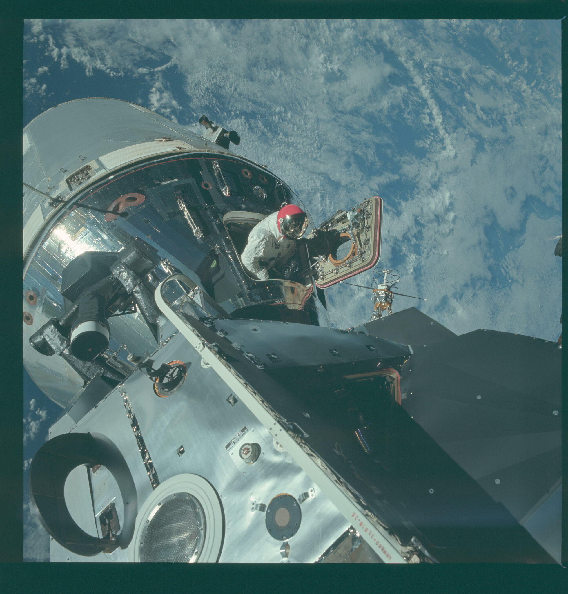

00
Alcance de esta prueba
Esta sección presenta de forma introductoria cuatro retos de materiales vinculados con el entorno espacial. Su desarrollo se ampliará progresivamente con información técnica, aplicaciones y fuentes específicas.
TRANSICIÓN
De la Tierra al entorno espacial.
La misma estructura que funciona en la Tierra debe enfrentarse luego a vacío, radiación, polvo y cambios térmicos mucho más extremos.
01
El entorno espacial convierte cada material en una decisión de ingeniería
Esta página queda separada como el espacio dedicado al problema: temperatura, masa, precisión, radiación y resistencia. El contenido definitivo se completará cuando se seleccione la información exacta de la investigación.
ENTORNO EXTREMO→LIMITACIÓN→PROPIEDAD NECESARIA→MATERIAL

ENTORNO REAL
El espacio deja poco margen para el exceso de masa.
La nave, los trajes y los sistemas exteriores muestran por qué propiedades como resistencia específica, aislamiento y estabilidad térmica son decisivas.